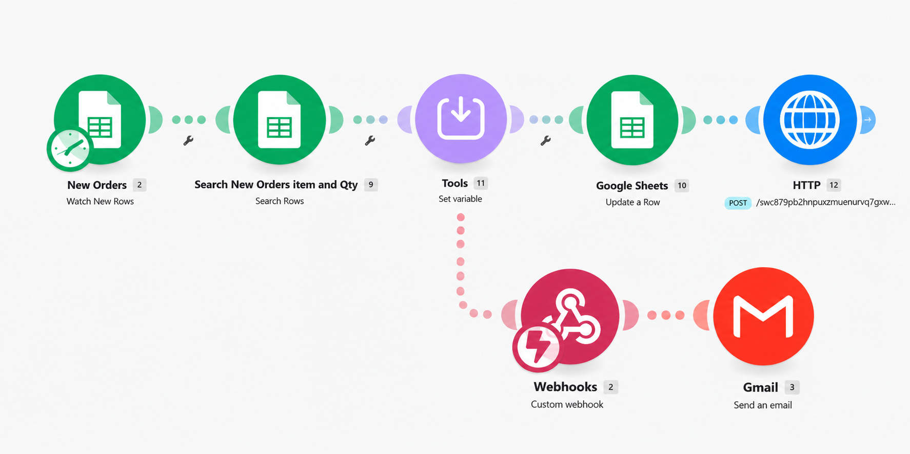

Inventory Automation Overview
Inventory processes can become difficult to manage when order activity and stock levels are tracked manually. Each new order may require someone to locate the correct item, calculate the remaining quantity, update the inventory record, and determine whether the new stock level requires attention.
This project demonstrates how inventory automation can streamline that process. As an example of operations and process improvement, the workflow monitors new orders, calculates updated inventory quantities, updates the inventory record, evaluates low-stock conditions, and automatically sends a notification when inventory requires follow-up.
Challenge
Reduce repetitive manual inventory updates while making low-stock conditions easier to identify and manage.
Automation Solution
Connect Google Sheets, Make.com, HTTP, webhooks, filters, and Gmail through a parent-and-child inventory automation design.
Operational Impact
Create a repeatable inventory monitoring process that updates stock levels and alerts the appropriate person when inventory falls below a defined level.
Inventory Monitoring Workflow
The workflow below shows how the main inventory automation monitors new orders, calculates stock changes, updates the inventory record, evaluates low-stock conditions, and triggers a secondary notification workflow when attention is required.

How the Inventory Automation Works
- Google Sheets monitors the New Orders sheet for newly added order records.
- The workflow searches the order and inventory information to identify the correct item and ordered quantity.
- A Make.com Tools step calculates and stores the updated inventory value.
- Google Sheets updates the corresponding inventory record with the new stock level.
- A low-inventory filter evaluates whether the updated quantity requires attention.
- If the low-stock condition is met, an HTTP POST sends the inventory information to a connected webhook.
- A secondary Make.com workflow receives the webhook data.
- Gmail sends an automated low-inventory notification.
Inventory Monitoring Business Rules
The automation uses defined business rules to control when inventory is updated and when the low-stock notification workflow should run.
- Only new order records should trigger the inventory-update process.
- The ordered item must be matched to the correct inventory record.
- The ordered quantity is used to calculate the remaining stock level.
- The inventory record is updated before the low-stock rule is evaluated.
- The secondary notification workflow runs only when the defined low-inventory condition is met.
Parent & Child Inventory Workflow Design
The automation separates inventory processing from notification delivery. The main Make.com scenario handles the order and inventory logic, while a secondary scenario receives low-stock information through a webhook and sends the Gmail alert.
Separating these functions keeps each workflow focused and creates a more flexible automation structure. The notification process can be expanded or modified later without requiring the primary inventory workflow to be redesigned.
Inventory Automation Tools & Methods
Automation Challenges & Problem Solving
One of the key challenges was ensuring that each order updated the correct inventory record and that the remaining quantity was calculated before the low-stock condition was evaluated.
The workflow therefore needed to maintain the correct sequence: identify the inventory item, calculate the updated quantity, update the inventory record, and then evaluate whether the new stock level met the low-inventory condition.
Separating the low-stock notification into a webhook-driven secondary workflow also required testing the information passed between the two scenarios and confirming that notifications were triggered only when the defined condition was met.
Operational Impact
This inventory automation creates a more structured process for updating stock information and identifying inventory that requires attention. It reduces repetitive administrative steps while maintaining defined inventory rules.
- Reduces repetitive manual inventory updates.
- Improves consistency in stock-level calculations.
- Provides faster visibility into low-inventory conditions.
- Creates an automated low-stock alert process.
- Supports more proactive inventory management and reorder planning.
- Creates a reusable notification workflow through webhook integration.
- Connects spreadsheet data, HTTP requests, webhooks, and email into one inventory automation process.
Inventory & Automation Skills Demonstrated
Have an Inventory Process That Needs Improvement?
Doe Farm Solutions helps businesses identify repetitive inventory and operational tasks, inefficient workflows, and opportunities for business process automation. Let's discuss whether a practical automation solution could improve inventory monitoring or another part of your business operations.
Schedule a Free 15-Minute Consultation